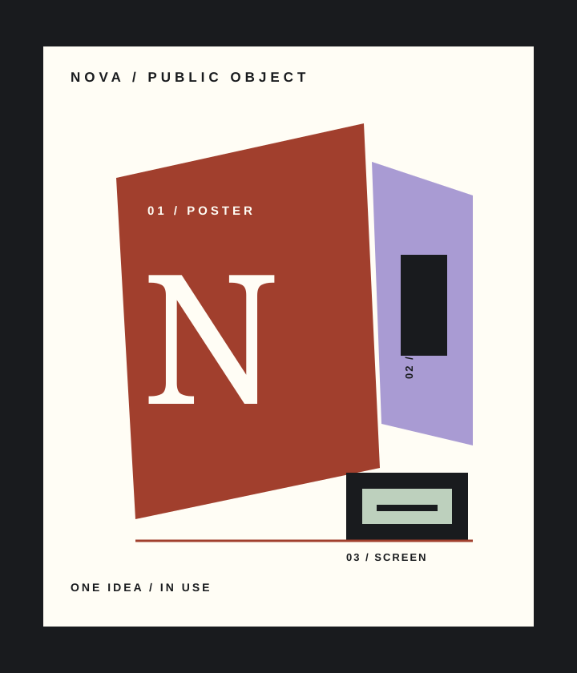

01 / COMMON MATTER
Independent studio / identity / place / digital
Make ideas land in public.
One point of view, carried across the surfaces where people actually meet it.
See the proof
A clear idea should survive contact.
We turn a point of view into a language people can recognise in the street, in a room, and on the screen they return to.
One point of view, in use.
Three delivery modes / held in one system
02 / LOUDHOUSE
A cultural venue with a sign worth following.
03 / AFTERLIGHT
An invitation that keeps moving after the first click.
Find the part that has to become real.
01Locate the public consequence
What changes when this belief reaches a wall, a room, or a screen?
02Give one object the lead
One visible proof carries the first read; the system fills in behind it.
03Let the detail earn its place
Each surface adds a real reason for the idea to be remembered.
04Send the work into use
The language holds from a first encounter to a repeated one.
Bring the unfinished thing.
A question, a place, a launch, or a point of view worth making public.